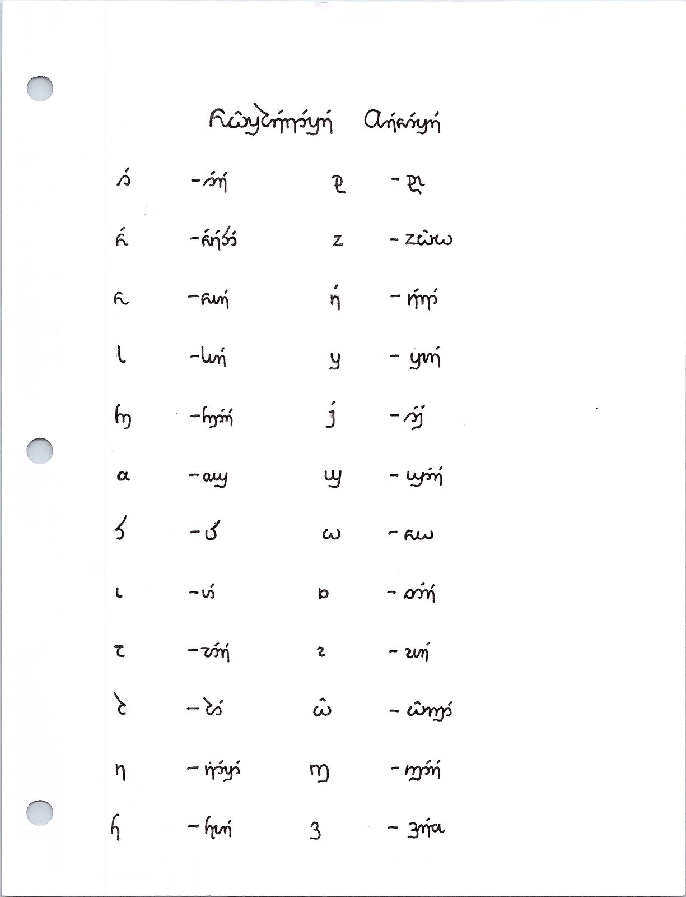
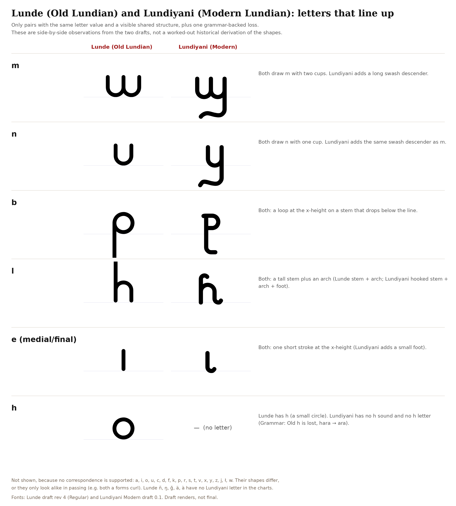

From Lunde to Lundiyani
An older literary language, and a much later lingua franca.
Lunde (Old Lundian) is the older literary language. Lundiyani (Modern Lundian) is the lingua franca that descends from it, much later, shaped by many languages. Dialect and register vary. A large part of the vocabulary is inherited, and a large part is new.
The relationship is not one substitution applied throughout. Some words remain recognizable. Some endings survive in new offices. Other words have been reshaped. A great many Lundiyani words stand without a Lunde counterpart in the lexicons; what follows is the history of the forms that can be set side by side.
The account is read from the grammars and the lexicons. A correspondence is the correspondence of the words in which it appears.
See the Lundiyani grammar and the Lunde lexicon.
The script became a full alphabet
The Lundiyani script is a full alphabet.
In the older hand, the vowel signs depend on position. An initial vowel carries an introductory shape. Medial i and e are strokes of different lengths; medial o and u are curls. Medial a is unwritten. Initial a and final a have forms of their own, so medial a is read from the syllable rather than from a letter in the line.
The modern alphabet has independent letters for a, e, i, o and u. What position once implied is written. The change is in the inventory of the script, not only in the ductus of the hand.
The alphabet still joins, and it still uses ligatures. A sheet of letters in combination shows the connected hand. It does not make the script a syllabary. Bowls, stems and rounded strokes continue from the old chart into the modern one. The comparative chart pairs letters by that visual structure. It does not trace the development of one glyph into another, and signs absent from the charts are left absent.
Lunde (Old Lundian)
The old hand is positional, as above: an introductory shape for an initial vowel, distinct medial strokes, and no written medial a.
Lunde Regular and Lunde Angular are two present hands for that old script. Angular is a present-day treatment of Lunde. It is not a historical stage between Lunde and Lundiyani, and it is not an intermediate alphabet. The script preview sets the romanization in those hands. It is type, not a manuscript.
See also the Lunde grammar, Sounds.


The same written words continue on both sides: on and on, osil and osil, kana and kana, li and li. Where the forms diverge, as in heneu / eneu and ilus / ilusi, the comparison is lexical and is set out below.
The sounds
The loss of h
Lundiyani has no h. hara, “three,” continues as ara.
heneu, “voice,” continues as eneu, with the same loss of initial h. hūł and ułe, “zero,” belong together, as the Lundiyani entry records; the vowel and the ending differ as well as the h.
h does not become x. x is a separate sound, and it remains.
Other correspondences
- The correspondence b : w is visible in alba / alwa, “red,” and in kabana / kawa, “hear.” käbana / kewe, “taste,” shows the same labial correspondence together with other changes in the word. These are the pairs in which it appears.
- gvena / wena, “eight,” has a simpler modern onset. The correspondence is this number word. g is otherwise retained.
- kämana / keme, “smell,” and värasa / vera, “do,” show Old ä beside Modern e, in words whose endings are also reshaped. The correspondence is these forms. It is not a merger of every ä with e, and not every modern e continues an old ä.
The two grammars describe the vowels differently. Lunde gives e and o as /ɛ/ and /ɔ/; Lundiyani gives /e/ and /o/. Lunde has no lexical tone. An accent that a font can draw is not a tone of the language.
Continuity
li, “thing,” on, “person,” osil, “eye,” and zen / zen, “time, occasion,” are written the same way in both languages, and so are several number words. The spelling agrees. The grammars do not equate the pronunciations. These forms are why a change at one ending is not a change at every ending.
See the Lunde grammar, Sounds, the Lundiyani grammar, Sounds, and the two lexicons.
Why do so many Modern words end in i?
Final i is frequent in Lundiyani, and it has several sources. It was not added to every older word.
Some i’s were already there
Old li already means “thing,” and the articles i, ci and ni already end in i. The later language adds nothing to these words.
Some mark a plural
Modern on → oni is “person → people,” and osil → osili is “eye → eyes.” Lunde already forms the animate plural in -i, including osili. The ending is inherited. It is not a vowel inserted into every stem.
Modern kora → kori, “cat → cats,” and kiwuru → kiwuri, “dog → dogs,” replace the last vowel. They do not simply add one after it. Inanimate nouns take -en or -nen. yami → yamo, “foot → feet,” is irregular, and yami is singular though it ends in i.
Some belong to a larger suffix
In ampa / ampxi, “feel / touch,” and kawa / kawxi, “hear / listen,” -xi marks action that is active or intended. In eden / edenkai, “eat / feed,” -kai is causative. -li forms thing-words, as in kaxli, “name.” The whole suffix carries the meaning. The final i is not a separate morpheme doing one job in every word. Lunde already forms thing-words in -li, as in edeli and tesseli. -kai has no counterpart in the older grammar.
Some are individual lexical changes
ilus and ilusi, “beautiful,” differ by a written i. The addition is this adjective. It is not a productive rule for forming adjectives. ine / ini, “here,” and nale / nali, “there,” continue final e as i: the vowel is replaced, not followed by another. tesi, “say, tell,” continues tesseasa in meaning. The modern verb is reshaped, and the i belongs to that form.
A large part of the modern vocabulary in final i has no older form beside it. The grammar records a → ai in some words only, not as a universal rule. Final i is not the continuation of every consonant-final word, every final e, or every final u. on, osil, li and kana, with its final a, stand as written.
See the Lunde grammar, Cases and Word formation; the Lundiyani grammar, Nouns and Word formation; and the lexicon entries for ilus / ilusi, ine / ini, nale / nali and tesseasa / tesi.
From endings to separate words
Lunde writes much of the sentence inside the word. The verb distinguishes person, tense and three forms of meaning: samon, the event itself; namon, experience from within; and exmon, action directed outward. Case distinguishes the transitive subject, the intransitive subject and the object. Ki labi guse, “I love you,” is one such sentence: ki is bare, and guse takes the object ending.
Lundiyani writes much of the same information as separate words. The verb does not change for person or for tense. lo marks the past, na the future, lan negation and lei the conditional. lai is the copula and the progressive marker. A pronoun has one form for subject and object. The morphology that remains is the possessive -de, the plural endings, and the derivational suffixes.
The older distinctions are not simply lost. kana, the namon “see,” remains kana. kanxi, “look,” is that root with the active suffix -xi. ampana / ampasa, “feel / touch,” stand beside ampa / ampxi. The three older forms organize meaning. They do not each become one modern suffix.
Old material in new roles
The grammars derive three pieces of the modern system from the old one.
- Possessive -de continues the old genitive. kide and dade stand beside ide and ade, “my” and “his or her.” The suffix is the continuity. The pronoun stems have changed; that change is not a law deleting k, g or d wherever they occur.
- Passive dei continues daze, “by him or her,” the agent of the old passive: the verb “be,” a participle, and the ablative.
- erane, “kill,” continues irrana, the namon of irrasa, “grab.” The connection is of form and of meaning. The sense “kill” is not given by the sounds alone.
-on for persons, -li for things, and the reversing prefix łe- continue. A modern sense that only resembles an older one is a resemblance of meaning, not the survival of a suffix.
Sentence shape
The ordinary modern order is subject, verb, object. Ki labi guse has that order as well. In the sentences the grammars give, there is no reversal of order from Lunde to Lundiyani.
Location is written differently. In Lunde, location words follow the noun and can take directional case endings. In Lundiyani, nai, “in, at, on,” and de, “from, of,” precede what they govern. Relative clauses in sa follow the noun in both languages. The modern grammar records the construction as the old one.
Lundiyani keeps rules of its own. ta, “have,” stands before its subject, and a command is ov with the verb and the person. Negation is the word lan, set before the verb, rather than the older abessive of the subject pronoun in Kiūłe labi guse. The language is analytic, and it still has rules and word-formation. Counting remains base twelve. The system continues. The individual number words do not all continue unchanged.
See the Lunde grammar, Verbs, Cases, Adjectives and Word formation; the Lundiyani grammar, Verbs, Pronouns, Word order and Clauses; and the Lundiyani grammar reference.
Compared forms
The table sets attested forms side by side, with the meaning they share. Each note says what that pair shows. The Lunde link opens the lexicon at the list; the headword is the form in the first column. The Lundiyani link opens the letter under which the modern form is entered.
| Lunde | Lundiyani | Meaning | What the comparison tells us |
|---|---|---|---|
| hara | ara | three | Loss of h in the word for three. |
| heneu | eneu | voice | The same loss of initial h, in the word for voice. |
| hūł | ułe | zero | The Lundiyani entry identifies ułe with Lunde hūł. The vowel and the ending differ as well. |
| alba | alwa | red | b : w in the word for red. The old form is a noun; the modern form is an adjective. |
| kabana | kawa | hear | b : w in the verb “hear,” with the ending reshaped. |
| käbana | kewe | taste | b : w together with ä : e and a reshaped ending. |
| tēlla | teila | day | The word for day in both languages. The forms are close. |
| ilus | ilusi | beautiful | An additional written i in this adjective. |
| ine | ini | here | Final e continues as i. |
| nale | nali | there | Final e continues as i in the word for there. |
| kana | kana | see | The old namon “see” and the modern verb are the same written word. |
| ampasa | ampxi | touch | The modern form is the active derivative in -xi. |
| tesseasa | tesi | say, tell | The verb “say, tell,” reshaped. The i belongs to the modern form. |
| li | li | thing | Final i is already present in the old word. |
| osil | osil | eye | The singular is the same in writing. The plural osili is already old. |
| on | on | person | The written form is the same, with no final vowel. |
Inheritance and change
Lundiyani has a full alphabet, and it writes in separate words much of what Lunde wrote inside the word. Vocabulary is inherited, a set of grammatical pieces is inherited, and a great deal has changed. The correspondences above are the correspondences of the words cited. They are not a reconstruction of every form, and they include no unattested intermediate stage.
Further forms either join one of these patterns, stand apart from them, or show that two similar words have separate histories.
Further reading
- Lunde lexicon and Lunde grammar
- Lundiyani lexicon and Lundiyani grammar
- Lundiyani grammar reference
- Lundiyani notebook pages
- Lunde script preview, in the present hands Regular and Angular